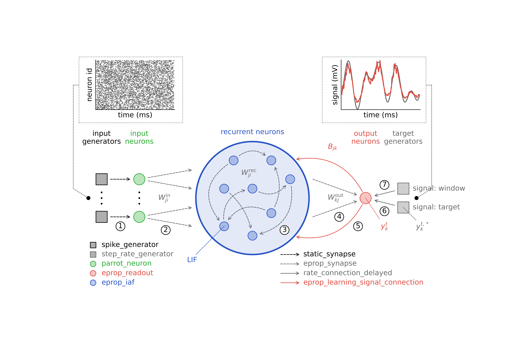

An on-site tutorial at the 35th Annual Computational
Neuroscience Meeting (CNS*2026)
July 11-15th, 2026
Description

NEST is an established open-source simulator for spiking neuronal networks that combines detailed biological modeling with high performance and scalability from laptops to HPC systems [1], and has supported hundreds of studies, including a large-scale model of human cortex [2]. In two independent modules, this tutorial highlights NEST’s support for compartmental neuron models and advanced synaptic plasticity.
Compartmental neuron models are a detailed way of describing biological neurons, capturing their spatially extended morphology as systems of coupled ordinary differential equations. We introduce the recently introduced compartmental modeling feature in NEST, starting with model construction in NESTML of biologically motivated multi-compartment neurons with active channels and synaptic inputs [4], and then create interacting networks composed of compartmental neuron populations. By explicitly constructing compartmental trees, participants gain transparent and fine-grained control over model structure. We will build a simple ion channel model in NESTML, and show how it can be compiled, rewritten, and extended, providing a concrete template for user-defined model development. The tutorial demonstrates dendritic computations emerging from explicitly constructed compartmental neurons and networks, and offers a practical entry point for developing custom compartmental models.

As an example of advanced plasticity rules in NEST, we present supervised eligibility propagation, an online, biologically inspired learning rule that approximates backpropagation through time [3]. We show how this rule can be used to train functional spiking neural networks to learn a range of tasks, from which we highlight the classification and generation of handwritten characters. The tutorial covers the full research workflow from model construction and simulation to data analysis.Participants can follow the material hands-on and interactively via the EBRAINS cloud services in the browser without local installation, and are encouraged to bring an existing EBRAINS account or create one in advance.
Citations
[1] https://nest-simulator.readthedocs.org/
[2] https://github.com/INM-6/microcircuit-PD14-model
[3] https://nest-simulator.readthedocs.io/en/latest/auto_examples/eprop_plasticity/index.html
[4] https://nestml.readthedocs.org/
Schedule (on-site tutorial)
The tutorial will start on Saturday, July 5th, 09:00.
| Time | Description |
|---|---|
|
Overview and introduction to NEST Simulator Agnes Korcsak-Gorzo |
|
|
Pattern generation and classification using eligibility propagation
(e-prop) Agnes Korcsak-Gorzo |
|
| Coffee break | |
|
Simulating compartmental models using NEST and NESTML Noah Ostendorf |
|
| Lunch break |
Materials
Course materials (presentations and notebooks) are available in our repository.
For presentations:
https://github.com/clinssen/NEST-workshop/tree/master/presentations
For the tutorial notebooks:
https://github.com/clinssen/NEST-workshop/tree/master/materials
Links
NEST Simulator is a spiking neuron simulator which specialises in point neurons and neurons with few comparments. It can simulate synaptic plasticity, structural plasticity, gap junctions and countless other features on machines ranging from home PCs to high-performance computing systems.
NEST Desktop is a web-based GUI application for NEST Simulator. It enables the rapid construction, parametrization, and instrumentation of neuronal network models.
NESTML is a domain-specific modeling language and code-generation toolchain. It supports the specification of neuron models in an intuitive and concise syntax. Optimised code generation for the target simulation platform couples a highly accessible language with good simulation performance.
Registration
Please don’t forget to register for the on-site meeting in Halifax. Registration is required.
Tutorials are not recorded and are not livestreamed events on YouTube. Please note that this is an on-site event only.
Software requirements
You will be able to access the required software directly from your browser, without requiring any installation via the EBRAINS JupyterLab platform at https://lab.ebrains.eu/. Please make sure to create an account before the start of the tutorial!
You can also run the software on a local computer. We suggest using two Docker images that we provide:
JupyterLab server with NEST and NESTML support
Launches a Jupyter Notebook server on localhost at port 7003. The password is: nest25years
The image is available via DockerHub. To install:
docker pull clifzju/nest-nestml-jupyterlab-ocns-tutorialThen run the image while forwarding the port:
docker run -i -d -p 7003:7003 -t clifzju/nest-nestml-jupyterlab-ocns-tutorialYou can then access the server in your browser by navigating to the URL http://localhost:7003.
The Docker container can be started in interactive mode (giving you a shell prompt) by omitting the
-dparameter.-
For local installation, we recommend to use the official NEST Desktop Docker image and instructions. Full instructions can be found at: https://nest-desktop.readthedocs.io/en/latest/deployer/deploy-docker-compose.html.
Feedback
If you participated in (any part) of this tutorial, we value your feedback! Please take a moment to fill in our short feedback form at https://www.surveymonkey.com/r/MBMWN26.
Organisation
This tutorial is organised by Agnes Korcsak-Gorzo, Charl Linssen, and Noah Ostendorf from Jülich Research Centre, Jülich, Germany.
For general inquiries, please contact Charl at c.linssen@fz-juelich.de.